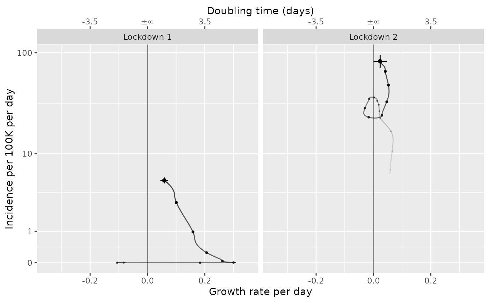

R/plot-growth-phase.R
plot_growth_phase.RdPlot an incidence or proportion vs. growth phase diagram
plot_growth_phase(
modelled = i_timestamped,
timepoints = NULL,
duration = max(dplyr::count(modelled)$n),
interval = 7,
mapping = if (interfacer::is_col_present(modelled, class)) ggplot2::aes(colour = class)
else ggplot2::aes(),
cis = TRUE,
...
)Either:
A dataframe containing the following columns:
time (as.time_period + group_unique) - A (usually complete) set of singular observations per unit time as a time_period
incidence.fit (double) - an estimate of the incidence rate on a log scale
incidence.se.fit (double) - the standard error of the incidence rate estimate on a log scale
incidence.0.025 (positive_double) - lower confidence limit of the incidence rate (true scale)
incidence.0.5 (positive_double) - median estimate of the incidence rate (true scale)
incidence.0.975 (positive_double) - upper confidence limit of the incidence rate (true scale)
growth.fit (double) - an estimate of the growth rate
growth.se.fit (double) - the standard error the growth rate
growth.0.025 (double) - lower confidence limit of the growth rate
growth.0.5 (double) - median estimate of the growth rate
growth.0.975 (double) - upper confidence limit of the growth rate
No mandatory groupings.
No default value.
OR:
A dataframe containing the following columns:
time (as.time_period + group_unique) - A (usually complete) set of singular observations per unit time as a time_period
proportion.fit (double) - an estimate of the proportion on a logit scale
proportion.se.fit (double) - the standard error of proportion estimate on a logit scale
proportion.0.025 (proportion) - lower confidence limit of proportion (true scale)
proportion.0.5 (proportion) - median estimate of proportion (true scale)
proportion.0.975 (proportion) - upper confidence limit of proportion (true scale)
relative.growth.fit (double) - an estimate of the relative growth rate
relative.growth.se.fit (double) - the standard error the relative growth rate
relative.growth.0.025 (double) - lower confidence limit of the relative growth rate
relative.growth.0.5 (double) - median estimate of the relative growth rate
relative.growth.0.975 (double) - upper confidence limit of the relative growth rate
No mandatory groupings.
No default value.
timepoints (as Date or time_period vector) of dates to
plot phase diagrams. If multiple this will result in a sequence of plots
as facets. If NULL (the default) it will be the last time point in the series
the length of the growth rate phase trail
the length of time between markers on the phase plot
a ggplot2::aes() mapping
should the phases be marked with confidence intervals?
Arguments passed on to geom_events
eventsA dataframe containing the following columns:
label (character) - the event label
start (date) - the start date, or the date of the event
end (date) - the end date or NA if a single event
No mandatory groupings.
A default value is defined.
a ggplot timeseries
# example code
tmp = growthrates::england_covid %>%
time_aggregate(count=sum(count))
tmp_pop = growthrates::england_demographics %>%
dplyr::ungroup() %>%
dplyr::summarise(population = sum(population))
# If the incidence is normalised by population
tmp2 = tmp %>%
poisson_locfit_model() %>%
normalise_incidence(tmp_pop)
timepoints = as.Date(c("Lockdown 1" = "2020-03-30", "Lockdown 2" = "2020-12-31"))
plot_growth_phase(tmp2, timepoints, duration=108)
